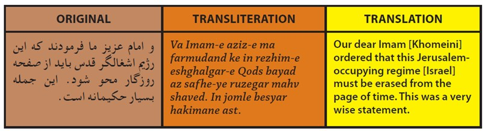
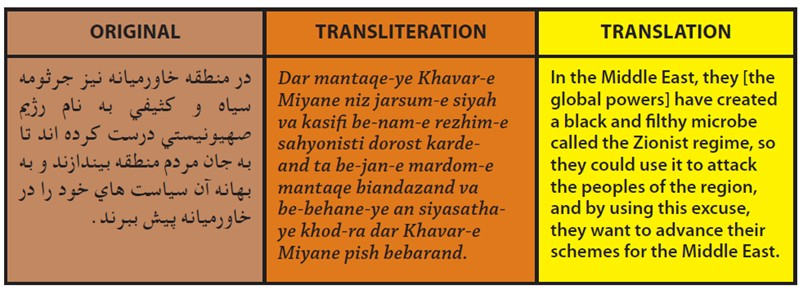
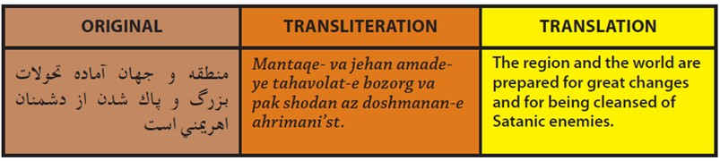
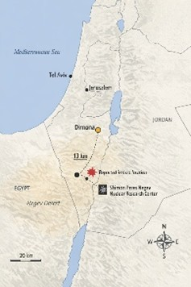

Vivo in Israele dal 2012 e sono sempre stato uno che parla con i sanpietrini. Chiedo, ascolto, raccolgo impressioni, faccio domande, a volte anche gossip, soprattutto quelli.
Succede ovunque. Ogni Paese ha le sue leggende metropolitane: a Roma c’è Pasquino, negli Stati Uniti c’è l’Area 51. In Israele, una di queste storie porta sempre allo stesso nome: Dimona.
Nel deserto del Negev, vicino a Dimona, sorge lo “Shimon Peres Negev Nuclear Research Center”. Che il centro esista si sa. Che lì sia custodita l’arma atomica israeliana, invece, appartiene da decenni al territorio dell’ambiguità, della deterrenza e del non detto.
In pratica nessuno lo sa, ma tutti sanno che è vero. Detta in italiano, è il segreto di Pulcinella.
Israele, del resto, non ha mai confermato ufficialmente di possedere la bomba atomica. Ed è proprio questo silenzio, così strategico e così calibrato, ad aver trasformato Dimona in qualcosa di più di un semplice sito sensibile: un simbolo.
Nei giorni scorsi Dimona è stata colpita dai missili iraniani. E qui la domanda diventa inevitabile.
Teheran voleva davvero colpire uno dei nervi più scoperti della deterrenza israeliana? Voleva mandare un messaggio che andasse oltre il danno materiale? Boh.
Non sappiamo se il centro nucleare fosse l’obiettivo dichiarato. Ma sappiamo che l’Iran ha scelto di colpire un’area ad altissimo valore strategico e simbolico, mentre allargava contemporaneamente la guerra alle infrastrutture energetiche regionali e alla pressione sullo Stretto di Hormuz.
Per questo non sembra un attacco qualsiasi. Sembra piuttosto il segnale di un regime che sta alzando la posta fino al limite estremo, giocandosi il tutto per tutto: non necessariamente per dimostrare in modo definitivo ciò che non può dimostrare, ma per insinuare il sospetto, forzare il non detto e trasformare Dimona in un’arma politica e narrativa contro Israele.
La differenza sostanziale, però, resta sempre la stessa. Israele mantiene da decenni una postura di ambiguità. L’Iran, invece, quello teocratico, ha costruito gran parte della propria storia sulla minaccia, sull’escalation e sulla dichiarazione aperta di voler distruggere Israele.
Non slogan “velati” come “dal fiume al mare”, che qualche idiota potrebbe perfino dire essere interpretabile: in questo caso è proprio scritto, nero su bianco, che bisogna cancellare l’entità sionista.
Qui alcune dichiarazioni di Ahmadinejad, presidente iraniano nei primi anni Duemila:

“Il nostro caro Imam (Khomeini) ordinò che questo regime di Gerusalemme occupante (Israele) deve essere cancellato dalle pagine del tempo. E questa è un’affermazione saggia.”

“Nel Medio Oriente, le potenze globali hanno creato un microbo sporco e nero chiamato regime sionista, in modo da poterlo usare contro i popoli della regione e, con questa scusa, avanzare nel Medio Oriente.”

“La regione, il Medio Oriente, è pronta a grandi cambiamenti per cancellare il nemico satanico, cioè Israele.”
E allora il punto non è soltanto dove siano caduti quei missili. Il punto è cosa rappresenta la scelta di colpire proprio lì: il tentativo di toccare non solo un obiettivo militare, ma uno dei tabù più sensibili dell’intero Medio Oriente.
Ma qui finisce il racconto e comincia la realtà.
Perché, anche ammesso che in guerra colpire un obiettivo militare possa rientrare nella logica del conflitto, le fonti pubbliche non mostrano un impatto sul centro nucleare di Dimona. Mostrano invece edifici residenziali colpiti a Dimona e Arad, con civili feriti. E mostrano anche un altro dettaglio decisivo: il sito nucleare si trova a circa 13 chilometri da Dimona.

Quindi, allo stato delle informazioni disponibili, la narrativa del “bersaglio strategico” resta una grandissima cazzata.
Il dato concreto, invece, è un altro: a essere colpite sono state aree civili.
Ed è sempre qui che si misura la differenza tra terroristi e democrazie.
Perché loro sono sempre stati questa cosa qui.